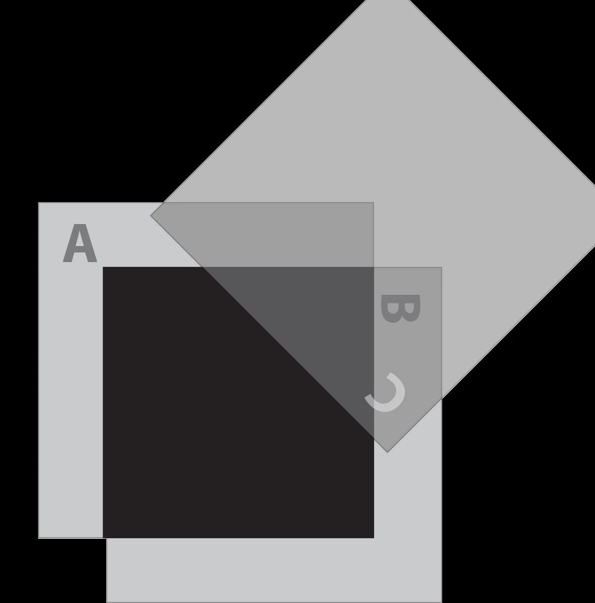

Quantum Supremacy Blog on Bell’s Inequality

Khyatee Atolia
|
11 August 2022
|
4 Minute Read

Trying to understand one of the key concepts in quantum computing and how data is stored in a qubit. Einstein has famously said, “God doesn’t play dice” and “I like to think that the moon is there, even if I am not looking at it.” But this sense of certainty that Einstein seemed to treasure was challenged by the peculiar nature of quantum particles and the field of quantum mechanics- a fact that bothered Einstein for quite a long time. To argue that the description of physical reality provided by quantum mechanics was incomplete, a thought experiment was proposed by Albert Einstein, Boris Podolsky, and Nathan Rosen, called The Einstein–Podolsky–Rosen paradox, or EPR for short.
The Problem - What Does the EPR Say?
Let’s take a system of two photons of identical polarization, a state that later authors would refer to as an entangled state. In an entangled state, if the position of the first particle were measured, the result of measuring the position of the second particle could be predicted. If instead the momentum of the first particle were measured, then the result of measuring the momentum of the second particle could be predicted. Let us take a pair of photons in such a state and emit them away from each other to great distances. There, let's say that Alice measures the position of the first photon, and on the other side, Bob measures the momentum of the other photon. However, because these particles are entangled, if Alice shares her results of the measurement with Bob, then Bob would, in theory, have the knowledge of both the position and the momentum of his photon- which is not possible and would contradict Heisenberg’s principle of uncertainty. Hence, if Alice makes a measurement of the position, then in practicality, it is not possible for Bob to make a measurement of the momentum, and vice versa. But the major question is, how does the other photon know, even across all that distance? How is it possible that the two photons have communicated with each other, and have had some sort of an information interchange?
The Proposed Solution - What Does the EPR Suggest?
One way would be that the two photons are constantly and immediately communicating with each other, instantaneously, faster than the speed of light. However, if that were the case, it would violate Einstein’s theory of relativity, and the violation of locality was not considered to be a plausible explanation for this nature. The authors claimed that given a specific experiment, in which the outcome of a measurement is known before the measurement takes place, there must exist something in the real world, an "element of reality", that determines the measurement outcome. This, in simple terms, means that there are some hidden variables or some characteristics/DNA encoded into the two photons that govern how they act for the entirety of their lives, and those hidden variables would ensure that they stayed entangled. The EPR argued that this might be able to explain the apparent instantaneous transfer of information. However, Bell’s inequality would go on to show why this certainly cannot be the case.
Polarization of light - Trying to Understand This Phenomenon
Polarization refers to the property applied to transverse waves that specify the geometrical orientation of the oscillations of the particles. Since light is a transverse wave, it can be polarized by passing it through polarizing filters. Polarized light will only oscillate in the particular direction of the filter that it has passed through. The light that has been vertically polarized is then unable to pass through a horizontal filter, and you can see this in practice. However, upon placing a third filter at 45 degrees between the two filters, light is once again able to pass all three filters, and emerges out of the horizontal filter at an intensity of 50 percent of the original intensity, as shown in the picture below. This is astounding because it is saying that going through a filter somehow alters the state of photons. Looking at polarization through 3 filters from the perspective of individual photons, a photon can either pass through a filter or it cannot pass through a filter- there is no 50% here. An unpolarized photon will either pass through filter A or it won’t. If it does go in, it will be vertically polarized and then it definitely will NOT go through filter B. For the third filter, there is a probability that it might go through it or it might not, and there is once again a probability it might go through or it might not. All of these are quantum mechanical phenomena- we cannot predict which of the photons will get through and which won’t.